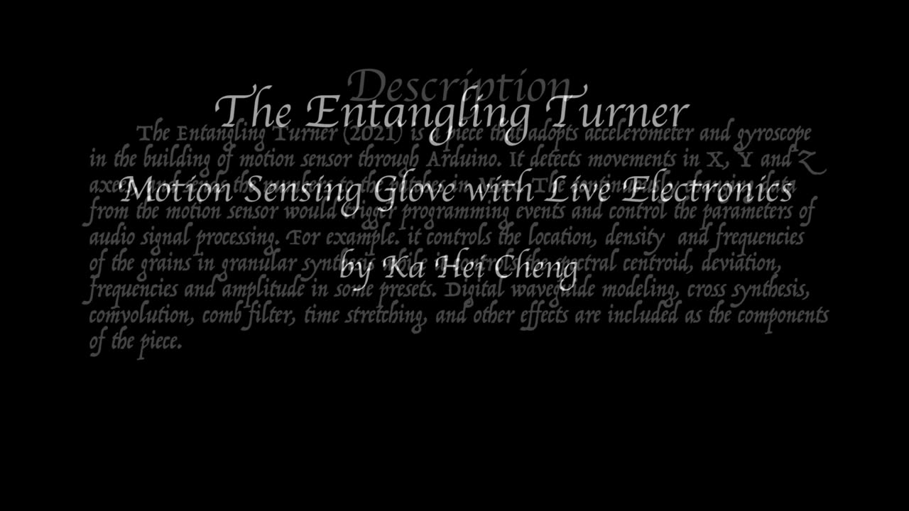

The Entangling Turner
Abstract
The Entangling Turner is a piece that adopts accelerometer and gyroscope in the building of motion sensor through Arduino. It detects movements in X, Y, and Z axes, and sends the numbers to the patches in Max. The continuously changing data from the motion sensor would trigger programming events and control the parameters of audio signal processing. For example, it controls the location, density and frequencies of the grains in granular synthesis while it controls the spectral centroid, deviation, frequencies and amplitude in some presets. Digital waveguide modeling, cross synthesis, convolution, comb filter, time stretching, and other effects are included as the components of the piece.
The piece portrays the imaginary movement of lines and grains in 3D platform which leads to their twist and entanglement with different density and tension in pulling and pushing force. The entanglement forms shape and somehow reaches a state that “all is one and one is all”. The invisible forces could drive the spectral components of the lines and grains in polarity yet bring it back to unity in the underlying and barely noticeable currents.
Requirements
The performance is for motion sensing glove and live electronics. It requires one performer who use Max and the glove during the performance. The piece needs a stereo audio system and it is suitable for any venue for performance (quiet venue is preferred as subtle sounds from the piece would be noticeable). The Entangling Turner has been recorded and performed twice. The first recording was from the Really Really New Music Marathon (RRNMM) in the Louisiana State University and the second recording was for NIME. Therefore, the performer is capable to perform the piece in live. However, the performer could not perform on-site in Shanghai for NIME 2021 because of her health and travel restriction. She would consider performing it in live next time if she is allowed.
Program Description
The Entangling Turner is for motion sensing glove and live electronics. The piece portrays the imaginary movement of lines and grains in 3D platform which leads to their twist and entanglement with different density and tension in pulling and pushing force. The entanglement forms shape and somehow reaches a state that “all is one and one is all”. The invisible forces could drive the spectral components of the lines and grains in polarity yet bring it back to unity in the underlying and barely noticeable currents. The performer expresses the motions of the strings through visual hand gestures and somehow the strings are dismantled and turned into tiny grains and particles, which gather or detach from each other according to the forces of the motions. Imagine that the grains might develop autonomy and consciousness in their colors, brightness, shape and form when forces are exerted. What would their consciousness lead them to and how do they develop? The strings and grains express the quality of time and the entanglement forms the motions to decorate our experience in time. Gradually, they might be absorbed, form a singularity or might vanish in the traces of lingering sounds remaining in our sensation.
Bios
Ka Hei Cheng is pursuing her PhD in Music in the Louisiana State University and she studied in the Education University of Hong Kong, the Hong Kong Baptist University and the Bowling Green State University. Born and raised in Hong Kong, Cheng approaches a diversified culture and philosophy that extend her musical dimensions and nourish a similarly diverse approach to her music composition by “brush strokes” with sonic palette. Under the influence of visual arts since her early ages, Cheng has particular interest in enriched and complex textual and timbral explorations. She is especially interested in exploring the sound of nature in the context of Acoustic Ecology, spectral music, spatialization and soundscape. Her piece, The Trigger Machine was performed in the Earth Day Art Model 2020, which was organized by IUPUI. She has also composed different genres of music, including music jingles, music for animation, tailor-made event music, electroacoustic music and acoustic composition with or without programming. Her works was accepted by the Exchange for Midwestern Collegiate Composers; and she has written music/pieces for the Screen Music Program and the Collaborative Composition Initiative. In 2020, she wrote a chamber orchestral piece, Nibiru, for the Cleveland Chamber Symphony and she was commissioned to write a commercial promotional music for the video from the CNA Group. In 2021, she was accepted by New Music Gathering to demonstrate her piece in a workshop with audience participation and music performance. She was also commissioned to write a music for the laptop orchestra in the Education University of Hong Kong.
Cheng is a pianist who also plays violin and Dizi. As a pianist, she was honored to receive champions in the Hong Kong Schools Music Festivals, GOCAA Youth Pianist Competition and Hong Kong Youth Barclampory Music Festival.
Media
(Youtube link has higher video quality)

▶ACKNOWLEDGEMENTS
Thank you all the support from the Louisiana State University